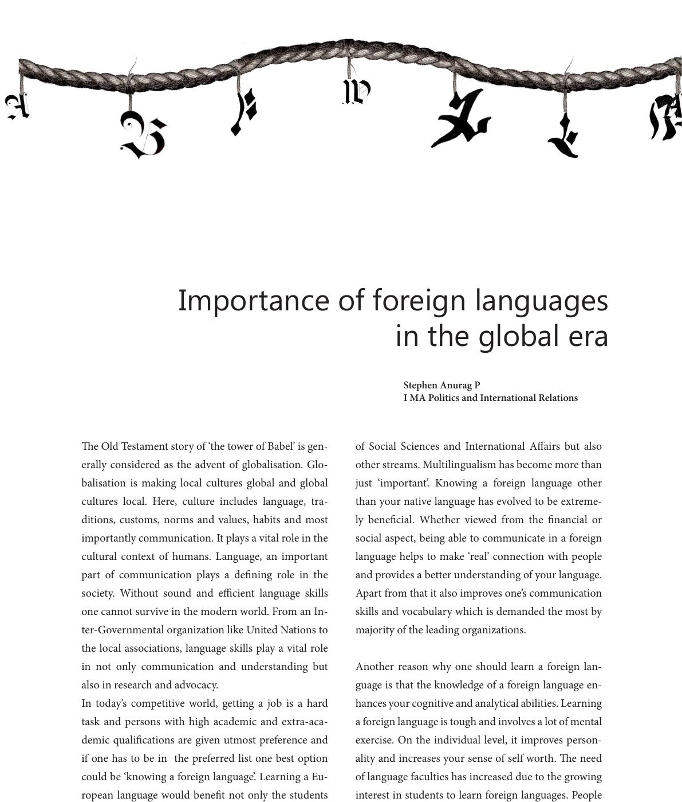

e Old Testament story of ‘the tower of Babel’ is gen-
erally considered as the advent of globalisation. Glo-
balisation is making local cultures global and global
cultures local. Here, culture includes language, tra-
ditions, customs, norms and values, habits and most
importantly communication. It plays a vital role in the
cultural context of humans. Language, an important
part of communication plays a dening role in the
society. Without sound and ecient language skills
one cannot survive in the modern world. From an In-
ter-Governmental organization like United Nations to
the local associations, language skills play a vital role
in not only communication and understanding but
also in research and advocacy.
In today’s competitive world, getting a job is a hard
task and persons with high academic and extra-aca-
demic qualications are given utmost preference and
if one has to be in the preferred list one best option
could be ‘knowing a foreign language’. Learning a Eu-
ropean language would benet not only the students
of Social Sciences and International Aairs but also
other streams. Multilingualism has become more than
just ‘important’. Knowing a foreign language other
than your native language has evolved to be extreme-
ly benecial. Whether viewed from the nancial or
social aspect, being able to communicate in a foreign
language helps to make ‘real’ connection with people
and provides a better understanding of your language.
Apart from that it also improves one’s communication
skills and vocabulary which is demanded the most by
majority of the leading organizations.
Another reason why one should learn a foreign lan-
guage is that the knowledge of a foreign language en-
hances your cognitive and analytical abilities. Learning
a foreign language is tough and involves a lot of mental
exercise. On the individual level, it improves person-
ality and increases your sense of self worth. e need
of language faculties has increased due to the growing
interest in students to learn foreign languages. People
Importance of foreign languages
in the global era
Stephen Anurag P
I MA Politics and International Relations